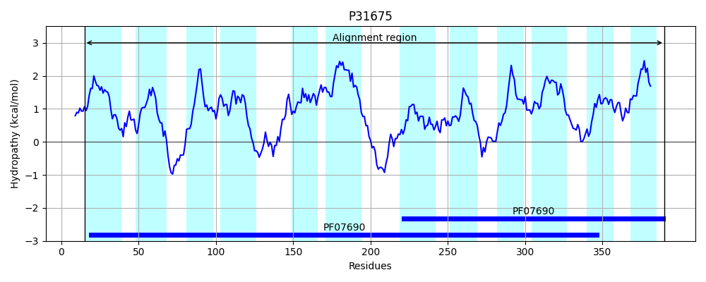

Hit Accession: P31675
Hit TCID: 2.A.1.20.1
Hit Description: gnl|BL_ORD_ID|9794 gnl|TC-DB|P31675|2.A.1.20.1 Sugar efflux transporter A - Escherichia coli.
Mach Len: 387
e:0.000000
Query TMS Count : 12
Hit TMS Count: 12
TMS-Overlap Score: 9.850000
Predicted Substrates:CHEBI:45745;streptomycin, CHEBI:6104;kanamycin, CHEBI:61448;isopropyl beta-D-thiogalactopyranoside, CHEBI:25679;oligosaccharide, CHEBI:10379;beta-D-Gal-(1->3)-beta-D-GlcNAc-(1->3)-beta-D-Gal-(1->4)-D-Glc, CHEBI:6668;maltose, CHEBI:3522;cellobiose, CHEBI:6353;alpha-lactose, CHEBI:320061;methyl alpha-D-glucopyranoside, CHEBI:24163;galactoside, CHEBI:5418;glucose
BLAST Alignment:
Score: 385 , Bit scores: 152 bits, E-value: 2.0e-42, Alignment length: 387, Percentage identity: 28
Query: 13 YKLFVANMFLLGMGIAVTVPYLVLFATKDLGMTTNQYGLLLASAAISQFTVNSIIARFSDTHHFNRKIIIILALLMGALGFSIYFFVDTIWLFILLYAIFQGLFA-PAMPQLYASARESINVSSSKDRAQFANTVLRSMFSLGFLFGPFIGAQLIGLKGYAGLFGGTISIILFTLVLQVFFYKDL-NIKHPISTQQHVEKIAPNMFKDKTLLLPFIAFILLHIGQWMYTMNMPLFVTDYLKENEQHVGYLASLCAGLEVPFMIILGVLSSRLQTRTLLIYGAIFGGLFYFSIGVFKNFYMMLAGQVFLAIFLAVLLGIGISYFQDILPDFPGYASTLFSNAMVIGQLGGNLLGGAMSHWVGLENVFFVSAASIMLGMILIFFTKNQK 397
Y F+ F++G+ A+ P L LF ++++G GL AI+ V+ +A+ SD+ RK+II L+ A+G ++ F + +L ++ + A AMPQL+A ARE + +S+++ F++ V+R+ SL ++ GP + L G+ +F I +LVL F + ++ P ++ ++D + + F+A L+ MY ++MPL+++ L ++ G+L AGLE+P MI+ G R R +++ G LFY + F + ++ Q+F A+F+ ++ GIG+ +FQD++P G A+TLF+N++ G + ++ GA++ G V++V A ++ ++ +F T K
Sbjct: 15 YAAFMLVAFMMGVAGALQAPTLSLFLSREVGAQPFWIGLFYTVNAIAGIGVSLWLAKRSDSQGDRRKLIIFCCLM--AIGNALLFAFNRHYLTLITCGVLLASLANTAMPQLFALAREYAD-NSAREVVMFSS-VMRAQLSLAWVIGPPLAFMLALNYGFTVMFSIAAGIFTLSLVLIAFMLPSVARVELPSENALSMQ----GGWQDSNVRMLFVASTLMWTCNTMYIIDMPLWISSELGLPDKLAGFLMGTAAGLEIPAMILAGYYVKRYGKRRMMVIAVAAGVLFYTGLIFFNSRMALMTLQLFNAVFIGIVAGIGMLWFQDLMPGRAGAATTLFTNSISTGVILAGVIQGAIAQSWGHFAVYWVIA---VISVVALFLTAKVK 390 | Protein Hydropathy Plots: |
|---|
|  |
Pairwise Alignment-Hydropathy Plot:
|
|---|
|